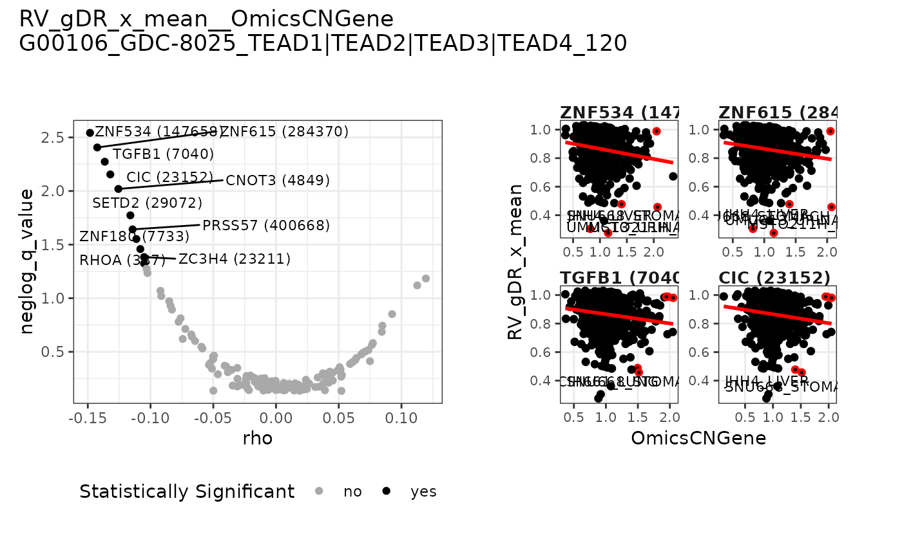

Plot panel with volcano plot and according to the data type - scatter plots or box plots
Source:R/plot-prism.R
plot_volcano_assoc_panel.RdPlot panel with volcano plot and according to the data type - scatter plots or box plots
Arguments
- dt_response
data.tablewith the experimental response data (rows are samples) for one metric outputted by one of functions:prep_dt_response_metric_sa,prep_dt_response_dose_sa,prep_dt_response_scoresorprep_dt_response_metric_diff, must have at least a column withCellLineNameand a numeric column with metric values.- dt_depmap
data.tablewith dependent variables data loaded from DepMap where rows are samples, columns are features/metadata levels; one of: data for one feature outputted byprep_dt_depmap_feator data or data for one metadata outputted byprep_dt_depmap_meta- selected_metric
string name of the metric in
dt_response- selected_feat_meta_col
string with name of selected feature from
dt_depmapor the name of the selected metadata fromdt_depmap- respectively
Value
A named list with elements:
assoc_datatable with association datapanelggplotobject containing a panel with volcano plot and depending on data type: a scatter plots with correlation for top 4 variables or boxplots for variable levels
Author
Janina Smoła janina.smola@contractors.roche.com
Examples
mae_prism <- gDRutils::get_synthetic_data("prism")
se_prism <- mae_prism[[gDRutils::get_supported_experiments("sa")]]
dt_metrics <- gDRutils::convert_se_assay_to_dt(se_prism, "Metrics")
dt_response <- prep_dt_response_metric_sa(
dt_metrics = dt_metrics,
d_name = unique(dt_metrics[["DrugName"]])[1],
normalization_type = "RV", metric = "x_mean")
feat_data_path <- system.file("depmap_data", package = "gDRtestData")
meta_data_path <- system.file("depmap_data/Model.csv.gz", package = "gDRtestData")
obj_depmap_feat <- prep_dt_depmap_feat(feat_data_path, meta_data_path,
feature_set = "OmicsCNGene")
plot_volcano_assoc_panel(
dt_response = dt_response,
dt_depmap = obj_depmap_feat[["dt_depmap"]],
selected_metric = "RV_gDR_x_mean",
selected_feat_meta_col = obj_depmap_feat[["selected_feat_meta_col"]])
#> $assoc_data
#> feature response rho q_value neglog_q_value
#> <char> <char> <num> <num> <num>
#> 1: ZNF534 (147658) RV_gDR_x_mean -0.14824996 0.002867780 2.5424541
#> 2: ZNF615 (284370) RV_gDR_x_mean -0.14248001 0.003925022 2.4061579
#> 3: TGFB1 (7040) RV_gDR_x_mean -0.13649677 0.005332100 2.2731017
#> 4: CIC (23152) RV_gDR_x_mean -0.13206367 0.007002094 2.1547721
#> 5: CNOT3 (4849) RV_gDR_x_mean -0.12565526 0.009563663 2.0193757
#> ---
#> 146: UGT3A2 (167127) RV_gDR_x_mean 0.01442878 0.725568543 0.1393216
#> 147: MET (4233) RV_gDR_x_mean -0.01005047 0.727138752 0.1383827
#> 148: CDK4 (1019) RV_gDR_x_mean -0.04991113 0.728755050 0.1374184
#> 149: ALK (238) RV_gDR_x_mean 0.01879964 0.730468704 0.1363984
#> 150: MYCN (4613) RV_gDR_x_mean 0.05212956 0.732223291 0.1353565
#>
#> $panel

#>